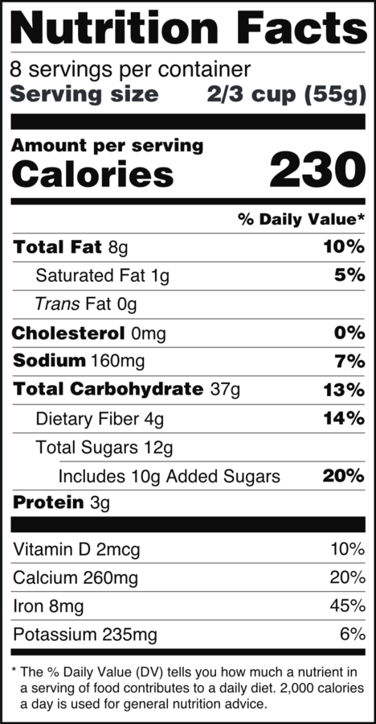

This book is for informational purposes only. Except when an external source is cited, everything in the book is the author’s opinion. The author makes no guarantee about the correctness or accuracy of any content in this book. Furthermore, you may disagree with and/or find certain content offensive.
Read at your own risk. Do not continue reading if you do not accept full responsibility for all actions you take as a result of reading this book. The author is not liable for any damages including, but not limited to, academic failures, career path mistakes, financial loss, feeling upset, and physical/mental injury.
Physical health is often overlooked and not as heavily emphasized as academics and mental health. There have always been academic advisors. In recent years, institutions also started adding mental health professionals, but besides the importance of sleep, the other aspects of physical health often get ignored.
Your physical health plays a large factor on your college success. It’s much easier to do well in your coursework and be happy when you’re healthy. Everything gets tougher when you’re sick. Furthermore, many people overlook their physical health because they feel young and strong in college. Don’t make that mistake and end up regretting poor decisions that damage your physical health.
Damaging your physical health starts a vicious cycle. The moment you get seriously ill, you miss class. When you miss class, you fall behind and have to dedicate more time to catching up. When you dedicate more time to catching up, you have to give up some combination of sleep, eating, and exercise. When you neglect your physical health further, you risk getting even more sick. That’s how the cycle repeats and at some point, you hit your breaking point and crash.
Avoid the vicious cycle by taking good care of your body. In this chapter, we’ll cover best practices for three important components of your physical health: sleeping, exercising, and eating.
For college, sleep is the most important bodily function because it lets your brain rest and you need a fully-functioning brain to do well on your academics. Ideally, you’d sleep as long as you need to and wake up naturally, but nobody in college has the luxury to do that. Eight to nine hours is usually a good compromise unless you naturally wake up with less sleep.
Caffeine consumption indicates that you need more sleep. If you can’t get through the day without a cup of coffee or an energy drink, then work on reducing or breaking free of your caffeine addiction and sleeping more. To avoid going into caffeine withdrawal, cut down your caffeine consumption by a quarter cup or so every few weeks. In addition, start sleeping earlier. When you break free of caffeine, you’re getting enough natural rest so that you don’t rely on drugs to boost your energy levels.
Furthermore, ensure you sleep during the night and not during the day. Most people should aim to go to sleep between 9PM and 12AM and get up between 6AM and 9AM. Avoid staying up extra late one night because you’ll throw off your sleep schedule on subsequent nights and lose your balance. Schedule your classes to accommodate your sleeping schedule. Try to stick to your sleep routine and work around your sleep schedule.
If you have difficulty falling asleep, work on clearing your mind. Breathe in while you count to ten slowly in your mind. Then exhale and as you count to ten again. Repeat ten times in a row without getting distracted and you should be able to fall asleep before you finish.
Exercise also improves your sleep and general physical wellbeing. If you’ve ever pushed your body through some strenuous exercise, then you’ll know the feeling at the end of the day when you collapse into bed and sleep like a log. You’ll also wake up feeling refreshed the next day. Regular exercise is important for your general physical health and we’ll go over some exercise ideas next.
Cardio involves getting your heart rate elevated for an extended period of time. Examples of cardio include running, walking, cycling, or dancing. Cardio is easy to do anytime you want. You can go outside for a run or bike ride when the weather looks good, walk around the block several times, or dance to music indoors if you don’t want to leave the comfort of your home.
For those who don’t normally exercise, I recommend you start with running. Running outside doesn’t require any prior experience or equipment. Search up “Mapometer” on Google and use the tool to plan out a path. Then put on a pair of sneakers and go. Take your phone with you so that if you get lost, you can find your way home. Start by running just a mile at a manageable pace two or three times a week. Every few weeks, increase your distance by a quarter mile. You’ll be running many miles in no time. The benefits of running include strengthening your heart, getting fresh air, and relaxing your mind. It’s also difficult to injure yourself when running short distances.
If you can’t get outside, look for a treadmill or stationary bike. Otherwise, jumping jacks, jump roping and high-knees are all other forms of cardio that require no experience and can be done indoors. Finally, if you like to dance, you can search on YouTube for dance exercise videos and follow along with the instructor.
A second type of exercise is strength training, which involves elevating your heart rate and repeatedly stressing your muscles for short periods of time. You can also do strength training anywhere you want, but most people prefer going to a gym and taking advantage of all the weights and racks.
The simplest strength training exercises can be done using your own bodyweight. Pushups, squats, burpees, lunges, and situps can all be done without any equipment and it’s difficult to injure yourself accidentally. Watch a few YouTube videos and follow what the instructors say to achieve good form. Bodyweight exercises are a simple and great place to start for strength training.
You can also do strength exercises with free weights and machines in a gym. Gyms have equipment for bench presses, leg presses, cable exercises, weighted squats, deadlifts and more. Some machines may be unintuitive the first time you use them. Check YouTube for videos illustrating how to use different machines and suggested weight training programs.
When strength training, rotate between exercises to give your muscles a chance to rest before they’re used again. For example, loop between pushup, lunge, squat, and situp to exercise your arm muscles, leg muscles, glutes, and abdomen. Rotation ensures you work out different parts of your body and maintain balance.
If you find cardio or strength training by yourself to be boring, then team sports can be a fun way to meet your exercise needs. Most colleges have intramural sports leagues that anyone can join for a small fee. They are a great way to meet other people and socialize while getting exercise. There could be leagues for soccer, floor hockey, ultimate frisbee, basketball, volleyball, and more. Intramural sports are a great social alternative to cardio or strength training by yourself.
In addition to sleep and exercise, your nutrition plays an integral part in your physical wellness. Eating well boosts your energy levels and immune response to diseases. In this section, we’ll discuss how to manage the food and drinks you consume.
First and foremost, stay hydrated and drink lots of water. Water is crucial for all your bodily functions, especially your brain and academic thinking. Aim to drink at least half your body weight in water each day. For example, if you weigh 150 pounds, then try to drink 75 ounces of water. Bring a water bottle everywhere you go and get into a habit of drinking water regularly.
Ditch the flavored drinks: they’re full of bad ingredients. Carbonated beverages get their fizz from carbonic acid, which can wear away the enamel on your teeth. Sugary beverages give you tons of calories with no other nutritional benefits. If you must have some sort of flavor, try putting slices of fruit in your water. When you’re just trying to stay hydrated, no other drink beats plain water.
Next, we’ll go down the typical FDA nutrition facts label:

(source: U.S. Food and Drug Administration) [4]
We’ll discuss the different types of nutrients and what foods to seek out versus avoid.
Fats are important for your body as a source of energy and for absorbing fat-soluble nutrients. Consuming too little good fat means you’ll constantly feel hungry. Furthermore, without fats, your body can’t absorb fat-soluble nutrients that keep your eyes, bones, skin, blood, and other bodily functions working. On the other hand, consuming too much bad fat increases your risk for heart disease. Let’s discuss the saturated, unsaturated, and trans fats next.
In a single day on a 2000 calorie diet, you should consume around 60 grams of fat total. Limit saturated fat to 15-20 grams because they increase your overall cholesterol levels. High cholesterol levels lead to clogged arteries and heart problems when you get older. Do not consume trans fat because it increases bad cholesterol (LDL) that clogs up your arteries and reduces good cholesterol (HDL) that carries LDL out of your body.
Prioritize consuming unsaturated fat because they help you feel full without adverse effects on your cholesterol. Plant based products have more unsaturated fat than saturated fat; promote these foods in your diet. Nuts, seeds, olives, and avocados are all great foods. Limit animal products in your diet because they have more saturated fat than unsaturated fat; red meats, butter, cheese, baked pastries, and non-skim milk are all high in saturated fat. Fat-free products such as chicken breast and skim milk are fine because they do not contain any fat at all. Finally, anything made with partially-hydrogenated vegetable oil contains trans fat and should be completely avoided. Check nutrition labels and keep a running tally of your fat intake for the day to maintain a good balance of fats.
Most studies have shown your cholesterol intake from foods has little impact on LDL and HDL levels in most people. Your body regulates its production of cholesterol. If you eat less cholesterol, your body will produce more to make up the deficit and if you eat more cholesterol, your body will produce less. Your cholesterol output is unchanged and it is the LDL versus HDL balance from fat consumption that affects your ability to get rid of excess cholesterol. You do not have to pay much attention to cholesterol consumption so long as you watch your saturated and trans fat consumption.
Sodium maintains blood pressure, muscles, nerves, and other important physiological functions, but humans only need around 500 mg to survive. Most people consume over 500 mg in a single meal and it’s important to limit sodium consumption to under 2500 mg a day. Too much sodium leads to high blood pressure, strains your kidneys, and dehydrates you. Limit your consumption of processed foods: french fries, hamburgers, pizza, fried foods, and canned soups all have massive sodium content. Also limit your consumption of savory sauces. As with saturated and trans fats, regulate your sodium intake by checking nutrition fact labels.
In addition to fat, carbohydrates are another source of energy for your body. Carbohydrates come in two main forms: simple and complex. An example of a simple carbohydrate is table sugar: it has been extracted from sugar cane and comes without any of the original plant. An example of a complex carbohydrate is an orange: it still contains its original plant material and has not been refined from its natural state.
Although energy is energy regardless of the source, complex carbohydrates are better than simple carbohydrates because the complex type has more nutritional value and prevents you from overconsuming. Simple carbohydrates are refined such that all the nutritional value from the original plant is gone. Table sugar is just carbohydrates and nothing else, whereas an orange will have vitamins. Furthermore, complex carbohydrates contain fiber, which cannot be digested by your body. Fiber slows down your absorption of carbohydrates so that you feel full for longer and don’t overeat. Fiber also regulates your digestive tract so that you can defecate. In general, eat until you feel full, but prioritize naturally-occurring complex carbohydrates such as fruits and vegetables; avoid simple carbohydrates such as soda, juice, candy, chocolate, and ice cream.
Proteins and their amino acid building blocks are a vital nutrient for your organ structure. Meat contains all the different amino acids that your body needs; however, if you are consuming animal products for protein, prefer lean, white meat over fatty, red meat to keep your saturated fat intake in check. Plant-based proteins, such as tofu or beans, will also be sufficient. As a soft estimate, aim to eat around 40% of your bodyweight in grams of protein. For example, if you weigh 100 pounds, then try to consume around 40 grams of protein.
When you eat plenty of fruits and vegetables of different colors each day, you will get all the vitamins and minerals you need. Green leafy vegetables are especially packed with these nutrients. Eat your spinach, kale, and broccoli. Even if you detest them, start eating them a bit at a time and you’ll eventually become desensitized to the taste.
A balanced, healthy meal for an average person is 25% meat (or plant proteins for vegetarians), 25% grains, and 50% fruits and vegetables. The meats supply you with fats and proteins. The grains supply you with carbohydrates. The fruits and vegetables supply you with vitamins, minerals, and fiber.
Note: you may notice this directly contradicts the food pyramid you may have learned growing up. The food pyramid is inaccurate and was a product of manufacturers lobbying Congress.
The effects of a balanced diet are immense. In the short term, when your body gets all the nutrients it needs, you gain stronger immunity to ward off getting sick and losing time from school. You’ll also achieve higher energy levels during the day which helps you concentrate on your work. Furthermore, you’ll sleep better when you eliminate bad foods and fill your stomach with healthy ones. In the long term, you’ll live longer, you’ll stay in shape, and your future self will thank you for taking care of your body.
To meet your nutrition needs, consider purchasing a meal plan if your college offers one. A dining hall offers more variety than individual meal prep. The food may not taste amazing, but you can easily construct a balanced diet. As an added bonus, you’ll save time on grocery shopping, cooking, and dishwashing. If you are debating whether a meal plan makes financial sense, I’ll provide the analysis in the next chapter on finances.
Sleep, exercise, and nutrition are important contributors to your physical health. Ensure you get enough sleep so that you can go about your day without caffeine. Make sure you exercise regularly, whether it be some individual cardio and weight training, or via an intramural sport. Finally, keep a balanced 25% protein, 25% grains, 50% vegetable diet to ensure you get enough, but not too much, of all the important nutrients for your body. Good physical health lets you perform better at everything and it stays with you forever. Maintain your health during college; you’ll be thankful for it during college and for the rest of your life.